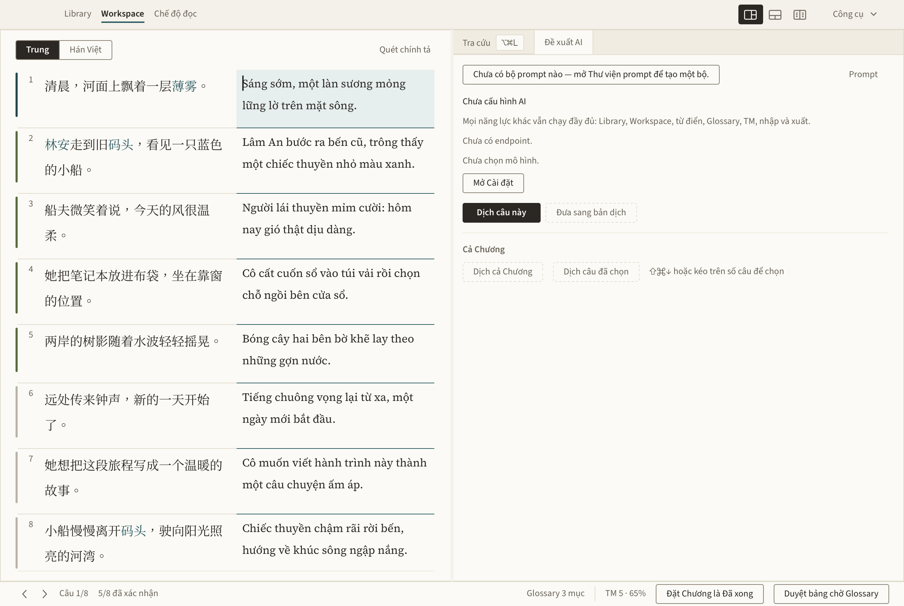
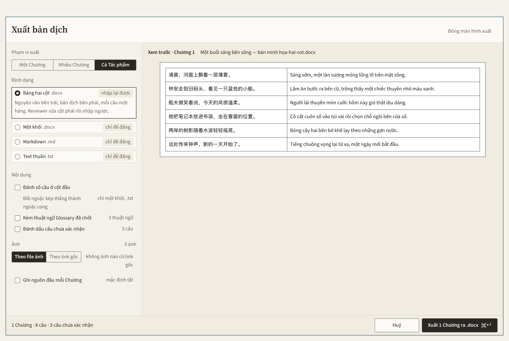

Tra cứu ngay bên câu đang dịch
Tra Trung–Việt, Anh–Việt, âm Hán Việt và Pinyin. Chọn các nguồn từ điển, gồm Thiều Chửu, Trần Văn Chánh và VietPhrase, theo nhu cầu của bạn. Mỗi kết quả có thông tin nguồn để đối chiếu.
Anh / Trung → Việt · Mã nguồn mở GPL-3.0-or-later
Đặt nguyên văn cạnh bản dịch, giữ tên riêng nhất quán và tìm lại những câu đã dịch. Tác phẩm, từ điển và công việc biên tập nằm ngay trên máy bạn.

Ảnh chụp ứng dụng thật với tác phẩm tự soạn “Một buổi sáng bên sông — bản minh họa”, tạo riêng cho trang này. Các con số trong ảnh thuộc dữ liệu mẫu.
Mở ảnh gốcCông cụ đi cùng từng bước đọc, chọn từ, sửa câu và xác nhận bản dịch.
Tra Trung–Việt, Anh–Việt, âm Hán Việt và Pinyin. Chọn các nguồn từ điển, gồm Thiều Chửu, Trần Văn Chánh và VietPhrase, theo nhu cầu của bạn. Mỗi kết quả có thông tin nguồn để đối chiếu.
Quản lý nhiều tác phẩm, chia chương và đối chiếu nguyên văn với bản dịch. Bản soạn tự động được lưu. Phân biệt câu chưa dịch, chưa xác nhận và đã xác nhận để biết phần nào cần đọc lại. Sắp xếp các bảng theo thói quen; bố cục làm việc được ghi nhớ.
Lưu tên riêng và cách dịch trong Glossary của tác phẩm hoặc dùng chung. Nhập, xuất CSV/TSV để trao đổi thuật ngữ; xem và quyết định từng đề xuất trước khi nhận.
Tìm lại các cặp câu đã xác nhận và gợi ý câu gần giống trong bộ nhớ dịch. Nhập, xuất TMX; dùng Concordance để xem một từ hoặc cụm từ đã xuất hiện và được dịch ra sao.
Chế độ đọc giúp xem liền mạch bản dịch, đánh dấu chỗ cần sửa và quay về đúng câu trong màn dịch. Lịch sử lưu các phiên bản đã xác nhận của câu; có thể xem lại và khôi phục khi cần.
Quản lý những cụm cần tránh và cách viết ưu tiên. Kết hợp quy ước với thuật ngữ đã chốt để giữ giọng văn nhất quán khi dịch và soát lại.
Chọn nhà cung cấp, mô hình và bộ prompt. Thư viện prompt giúp giữ các chỉ dẫn thường dùng; màn xem prompt cho biết nội dung chuẩn bị gửi. Có thể nhờ AI dịch, tra nhanh hoặc soát bản dịch rồi tự quyết định nhận sửa đổi.
Chức năng dịch nhanh có trong hàng đợi Glossary và màn xem trước nhập URL. Việc này không tự động dịch toàn bộ các chương.
Chọn bản cài phù hợp trong mục phát hành, đối chiếu SHA-256 và làm theo hướng dẫn cài đặt. Các từ điển được đóng kèm bản cài phát hành.
Nhập tệp hoặc dán nội dung, chọn tiếng Trung hoặc tiếng Anh rồi xem trước cách chia chương, chia câu. Với dữ liệu song ngữ, chọn cột nguồn và cột bản dịch.
Đọc nguyên văn cạnh bản dịch, chốt thuật ngữ và xác nhận câu đã hài lòng. Nếu cần AI, cấu hình nhà cung cấp và xem prompt trước khi gửi.
Kiểm tra câu chưa xác nhận trong chế độ đọc, chọn định dạng xuất và xem trước. Có thể nhận lại bản biên tập đúng định dạng để so sánh và chọn sửa đổi.
| Công việc | Định dạng / cách dùng |
|---|---|
| Nhập nguyên văn | TXT, Markdown (.md), DOCX; dán văn bản hoặc nhập từ URL có bước xem trước. |
| Nhập song ngữ | CSV, TSV hoặc bảng hai cột trong DOCX; xem và khớp các câu trước khi nhận. |
| Xuất bản dịch | DOCX một khối hoặc hai cột, Markdown và văn bản thuần (.txt). Có tùy chọn phụ lục thuật ngữ, đánh số câu và đánh dấu câu chưa xác nhận theo định dạng hỗ trợ. |
| Nhận bản biên tập | Nhận lại DOCX hai cột hoặc Markdown theo mẫu ứng dụng xuất để đối chiếu và chọn thay đổi. Bản xuất có đánh số câu hoặc đánh dấu câu chưa xác nhận không dùng để nhập lại. |
| Trao đổi thuật ngữ | Glossary qua CSV/TSV; bộ nhớ dịch qua TMX. |

Xuất bản hai cột để người biên tập đọc cả nguyên văn lẫn bản dịch. Khi nhận lại tệp đúng mẫu, xem các điểm khác biệt và chọn sửa đổi muốn áp dụng trong tác phẩm.
Giữ một bản xuất không đánh số câu và không đánh dấu câu chưa xác nhận nếu bạn định nhập lại bản biên tập.
Nguồn, bản dịch và ghi chú dưới đây được soạn sẵn để minh họa cách đọc đối chiếu. Trang này không tra từ hoặc gọi AI.
清晨，河面上飘着一层薄雾。林安走到旧码头，看见一只蓝色的小船。
Sáng sớm, một làn sương mỏng lững lờ trên mặt sông. Lâm An bước ra bến cũ, trông thấy một chiếc thuyền nhỏ màu xanh.
薄雾 · bó wù · Hán Việt: bạc vụ. Nghĩa trong câu: sương mỏng.
林安 · lín ān · Tên riêng mẫu: Lâm An.
Xem danh sách phát hành để biết các bản cài hiện có. Không cần tài khoản để tra từ, biên tập và lưu tác phẩm.
Một tệp DMG universal dùng cho cả Apple Silicon và Intel.
Tải DMG v1.1.0Bản cài MSI có nhúng WebView2, hỗ trợ cài khi không có mạng.
Tải MSI v1.1.0Đọc cách cài đặt, đối chiếu checksum hoặc xem mã nguồn.
Hướng dẫn cài đặtMã nguồn trên GitHubBản cài chưa được ký số; macOS chưa được notarize. Hệ điều hành có thể cảnh báo khi mở lần đầu. Hãy đối chiếu SHA-256 và làm theo hướng dẫn cho từng ứng dụng; không cần tắt bảo vệ cho toàn máy.
Ghi chú bản v1.1.0 · Checksum SHA-256 v1.1.0
Xem tất cả bản phát hành